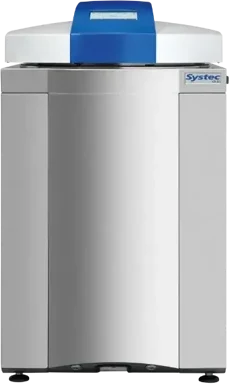

Vertical top-loading autoclaves
VX-Series Autoclaves
Systec GmbH is a manufacturer of laboratory sterilizers, autoclaves (steam sterilizers), media preparators and devices for dispensing liquid media and microbiological cultures. Certified to ISO 9001 and ISO 14001, Systec develops and manufactures a wide range of products for the modern laboratory, science and research, as well as biotechnology, pharmaceuticals, quality control and production. More than 25 years of expertise!
The Systec VX-series of vertical top-loading autoclaves, available in 8 sizes with chamber volumes from 40 to 150 litres combines a small footprint with a large chamber capacity. The result: optimal loading capacity for most standard media bottles and Erlenmeyer flasks.